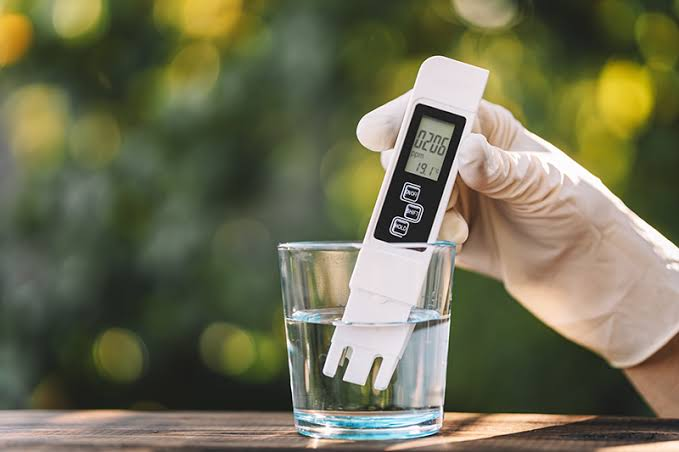

Durante nuestro proyecto realizamos diferentes mediciones para conocer algunas características del agua y comprender mejor su calidad.
Monitoreo físico-químico
Captura de datos en tiempo real
Estudio de parámetros clave
Para estudiar las muestras de agua no alcanza solamente con observar su color o aspecto. Existen características que pueden medirse mediante instrumentos y que nos permiten obtener información que no siempre podemos detectar a simple vista.
Durante nuestro proyecto trabajamos con diferentes parámetros. Entre ellos estudiamos el pH y los sólidos disueltos totales (TDS).
El pH es una medida que nos permite conocer si una sustancia es ácida, neutra o básica (alcalina). La escala de pH generalmente va de 0 a 14.
Sustancias con mayor concentración de iones de hidrógeno.
Punto de equilibrio químico (p. ej. agua pura a 25 °C).
Sustancias con menor concentración de acidez.
 🔍 Clic para ampliar
🔍 Clic para ampliar
La escala permite comparar el nivel de acidez o alcalinidad de diferentes sustancias de manera rápida e intuitiva.
Medir el pH nos permite conocer una de las características químicas del agua y comparar diferentes muestras.
TDS significa Total Dissolved Solids (Sólidos Disueltos Totales). Es una medida que indica aproximadamente la cantidad de sustancias disueltas presentes en el agua, como sales, minerales y otros compuestos.

Para realizar este tipo de medición utilizamos un medidor de TDS, que se introduce en la muestra de agua y permite obtener una lectura directa.
Un valor de TDS más alto indica una mayor cantidad de sustancias disueltas en el agua, pero el valor de TDS por sí solo no permite determinar si el agua es potable o no.
No identifica exactamente qué sustancias específicas están presentes en la muestra.
No reemplaza un análisis de laboratorio físico-químico y bacteriológico completo.
Es útil para comparar diferentes muestras y observar variaciones en la concentración disuelta.
Aunque ambos evalúan la muestra, analizan propiedades completamente independientes.
Indica si el agua presenta características ácidas, neutras o básicas según su concentración iónica.
Indica aproximadamente la cantidad total de sustancias y minerales disueltos presentes en el agua.
Ambas mediciones nos brindan información diferente sobre una misma muestra de agua.
Durante el proyecto analizamos diferentes muestras de agua y registramos distintos parámetros. Entre ellos, utilizamos mediciones de pH, TDS, conductividad eléctrica y temperatura.
Las mediciones realizadas durante nuestro proyecto tienen una finalidad educativa y de monitoreo. Estos parámetros permiten conocer algunas características del agua, pero no reemplazan los análisis físico-químicos y bacteriológicos realizados por laboratorios especializados.